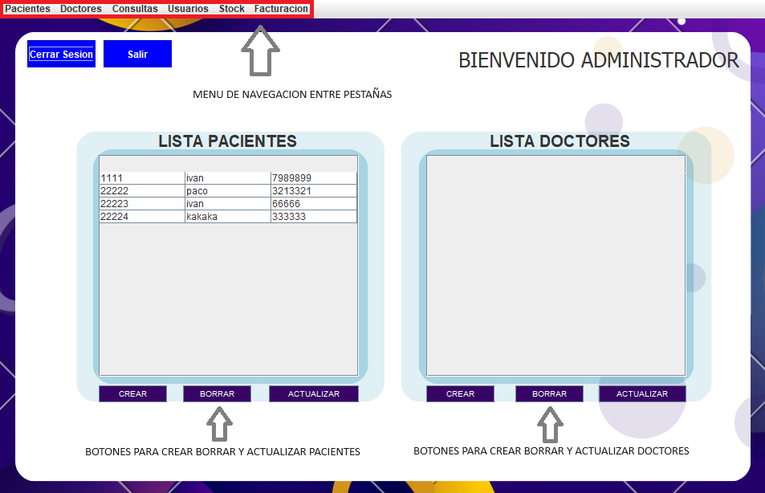

Ayuda: AdminFrame

Los siguientes pasos le guiarán a través de la pestaña principal del admin :
- Menu Navegacion: Gracias al menu podemos cambiar rápidamente de ventana.
- Botones Pacientes: Desde la pantalla,
seleccionaremos la acción a realizar, la cual nos abrira una nueva ventana con la opción elegida.
- Botones Docores: Desde la pantalla,
seleccionaremos la acción a realizar, la cual nos abrira una nueva ventana con la opción elegida.
Si tiene alguna pregunta o necesita ayuda adicional,
no dude en comunicarse con nosotros.